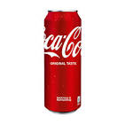
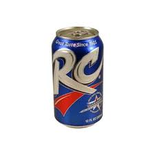
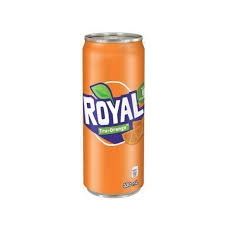
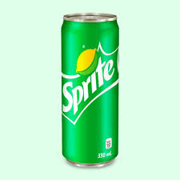
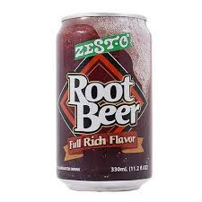
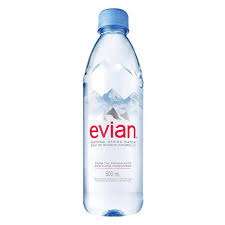
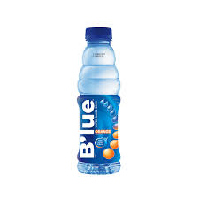
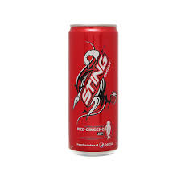

Coke
Size Options:330ml (12 fl oz), 250ml (8.5 fl oz), and 355ml
Ingredients (Classic Coke): Carbonated water, high fructose corn syrup (or sugar), caramel color, phosphoric acid, natural flavors, and caffeine.
Coca-Cola is a carbonated soft drink known for its signature sweet and refreshing taste, made from a blend of caramelized sugar, caffeine, and natural flavors. It comes in a sleek aluminum can, typically 330ml, with the iconic red-and-white branding that symbolizes its classic and timeless appeal. Available in various flavors like Cherry, Vanilla, and Zero Sugar, Coca-Cola remains one of the most popular beverages worldwide.

Pepsi
Size Options:330ml (12 fl oz), 250ml (8.5 fl oz), and 355ml
Carbonated water, high fructose corn syrup (or sugar), caramel color, phosphoric acid, caffeine, citric acid, and natural flavors.
Pepsi is a bold and refreshing carbonated soft drink with a distinctively sweet and citrusy taste, made from a mix of caramelized sugar, caffeine, and natural flavors. It comes in a stylish aluminum can, typically 330ml, featuring its signature blue-and-red branding that represents its energetic and youthful appeal. With multiple flavors like Wild Cherry, Vanilla, and Zero Sugar, Pepsi remains a global favorite among soft drink lovers.

RC
Size Options:330ml (12 fl oz) and 355ml
Carbonated water, high fructose corn syrup (or sugar), caramel color, phosphoric acid, caffeine, citric acid, and natural flavors.
RC Cola is a smooth and sweet carbonated soft drink known for its bold cola flavor and slightly higher caffeine content than its competitors. It comes in a simple yet recognizable aluminum can, often 330ml, with blue and red branding that reflects its classic and independent appeal. Though not as globally dominant as Coca-Cola or Pepsi, RC Cola has a loyal following and remains a popular alternative in many regions worldwide.

Royal
Size Options:330ml (12 fl oz), 250ml (8.5 fl oz), and 355ml
Carbonated water, high fructose corn syrup (or sugar), citric acid, sodium benzoate (preservative), natural and artificial orange flavors, caffeine, and food colorants.
Royal is a fruity and refreshing carbonated soft drink best known for its vibrant orange flavor, offering a sweet and tangy taste with a bubbly kick. It comes in a bright, colorful aluminum can, usually 330ml, featuring an eye-catching orange design that highlights its citrusy appeal. Popular in the Philippines and select markets, Royal is a favorite choice for those who love fruit-flavored sodas as an alternative to traditional colas.

Sprite
Size Options: Common sizes include 330ml (12 fl oz), 250ml (8.5 fl oz), and 355ml
Carbonated water, high fructose corn syrup (or sugar), citric acid, natural lemon and lime flavors, sodium citrate, and sodium benzoate
Sprite is a crisp and refreshing lemon-lime flavored soft drink known for its clean, citrusy taste and fizzy carbonation. It comes in a sleek green-and-silver aluminum can, usually 330ml, featuring its signature branding that highlights its fresh and thirst-quenching appeal. As a caffeine-free alternative to colas, Sprite remains a popular choice worldwide, enjoyed on its own or as a mixer in various beverages.

Rootbeer
Size Options:330ml (12 fl oz), 250ml (8.5 fl oz), and 355ml
Ingredients (Classic Root Beer): Carbonated water, high fructose corn syrup (or sugar), caramel color, natural and artificial flavors (including wintergreen, vanilla, licorice, and sassafras extract), sodium benzoate (preservative), and citric acid.
Root Beer is a sweet and foamy soft drink with a unique blend of vanilla, wintergreen, and herbal flavors, often enjoyed for its smooth and creamy taste. Typically sold in 330ml aluminum cans, it features deep brown packaging with branding that reflects its old-fashioned, nostalgic appeal. Available in both caffeine-free and caffeinated varieties, Root Beer remains a popular choice worldwide, often served with ice cream as a classic root beer float.

evian
Size Options:330ml (11.2 fl oz) and 500ml (16.9 fl oz)
Ingredients: 100% natural mineral water sourced from the French Alps, with naturally occurring minerals and electrolytes.
Evian is a premium natural mineral water sourced from the pristine glacial rocks of the French Alps, known for its purity and balanced mineral composition. Now available in sleek, eco-friendly aluminum cans (330ml or 500ml), it provides a refreshing and hydrating experience with a smooth, crisp taste. Whether still or sparkling, Evian remains a symbol of luxury and wellness, chosen by those who value high-quality hydration.

Blue
Size Options: Available in 410ml, 650ml,
Ingredients: Purified, sodium-free artesian well water enhanced with a proprietary blend of minerals.
Blue Waters Alkaline Water is a premium, purified artesian well water, enhanced with a proprietary blend of minerals to achieve an alkaline pH of 8.0 to 8.8. Packaged in various sizes from 410ml to 5 liters, it offers a refreshing and hydrating experience without any calories or caffeine. Sourced and bottled to the highest standards, Blue Waters Alkaline Water is a popular choice for health-conscious consumers in the Philippines.

Le Mineral
Size Options: Common sizes include 330ml, 600ml, 1,500ml, and 5,000ml bottles.
Ingredients: 100% natural mineral water sourced from mountain springs, containing essential minerals.
Le Minerale is a premium bottled mineral water brand, originally from Indonesia and now available in the Philippines, known for its pure and preserved natural mineral content sourced from mountain springs. Packaged in various sizes from 330ml to 5,000ml, it offers a refreshing hydration experience enriched with essential minerals to support overall health. Le Minerale is caffeine-free and contains zero calories, making it an excellent choice for health-conscious consumers seeking quality hydration.

Sting
Size Options: Common sizes include 330ml (11.2 fl oz) and 240ml (8.1 fl oz)
Ingredients: Carbonated water, sugar, citric acid, taurine, caffeine, inositol, B vitamins (B3, B6, B12), artificial flavors, and food colorants.
Sting is a high-energy carbonated drink known for its bold flavors and strong caffeine boost, designed to provide instant energy and mental alertness. Packaged in a sleek red or gold aluminum can (usually 330ml), it features a vibrant and energetic branding that reflects its intense and stimulating effects. Popular in the Philippines and other Southeast Asian markets, Sting is a go-to drink for those needing a quick burst of energy for work, sports, or daily activities.